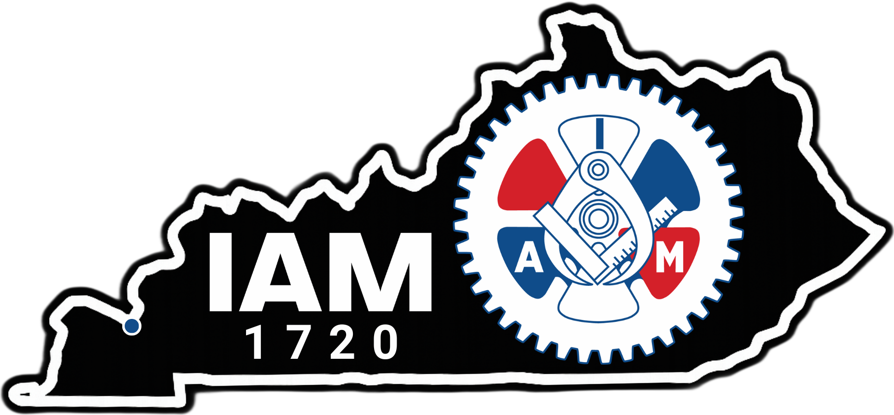

Calvert City, KY
Contract Expires In
Contact the Union
Find ways to reach IAM Local 1720.
Member Portal
Active members can access contracts, wage tables, benefits, and documents through our secure portal.
About Local 1720
Learn more about our mission, history, and commitment to representing workers at in Calvert City.
News & Updates
Public announcements, Charity events, and public updates will appear here as they are published.